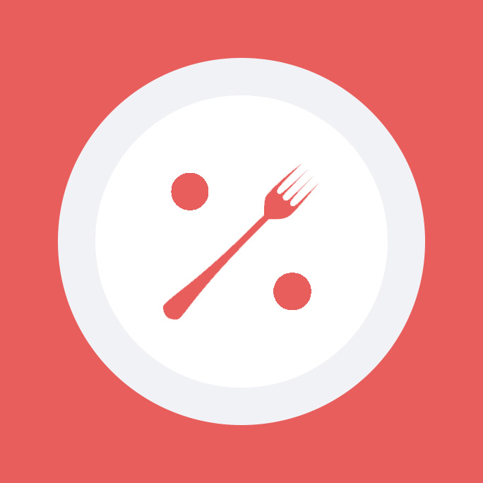
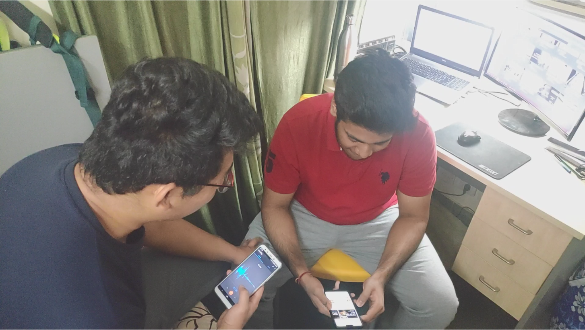
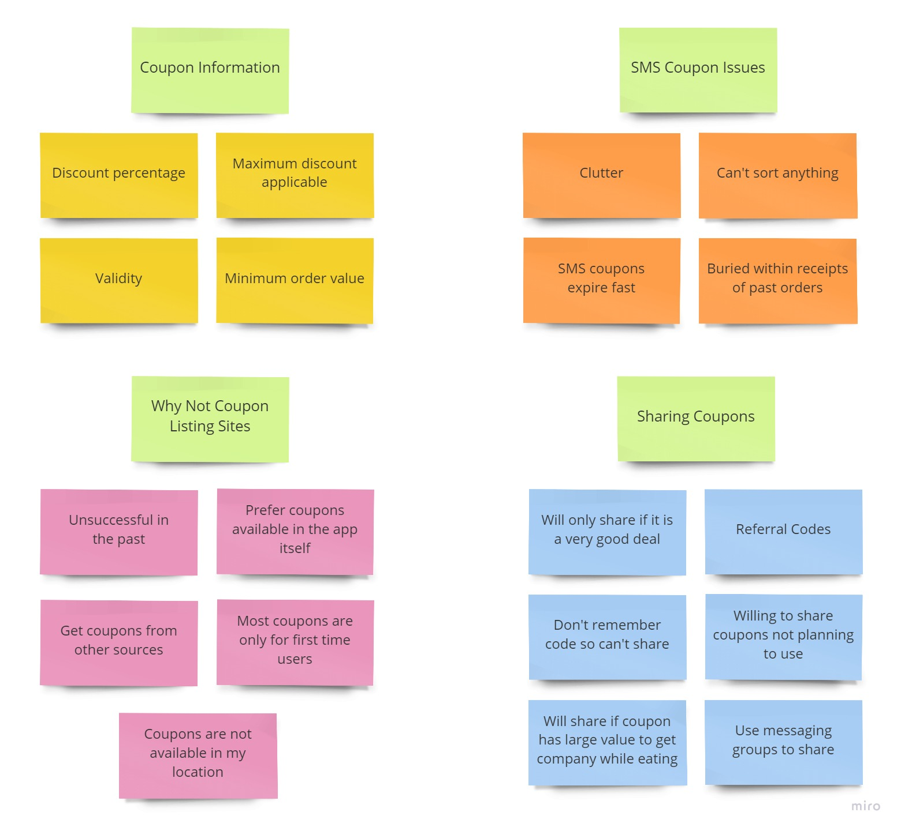
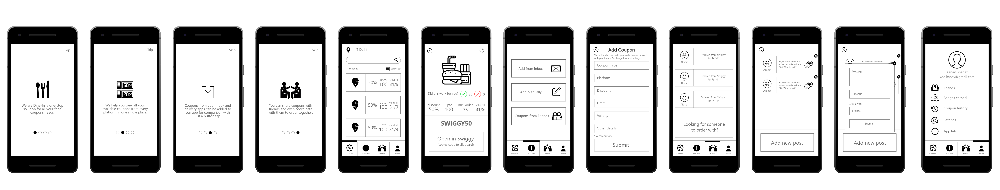
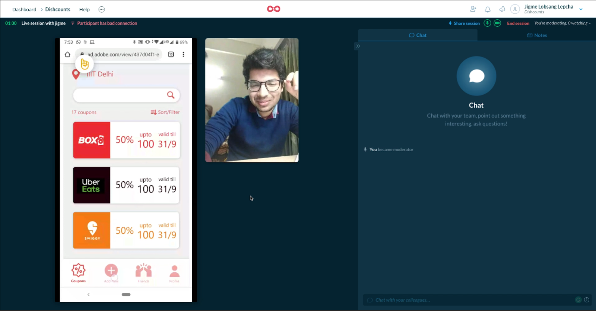
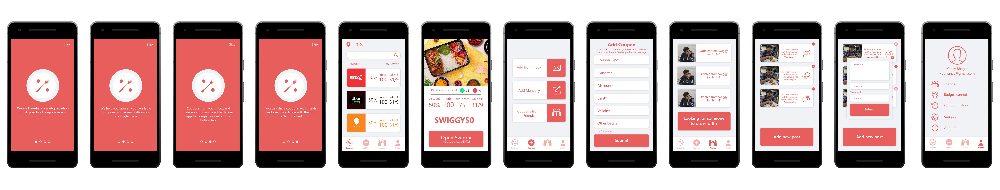
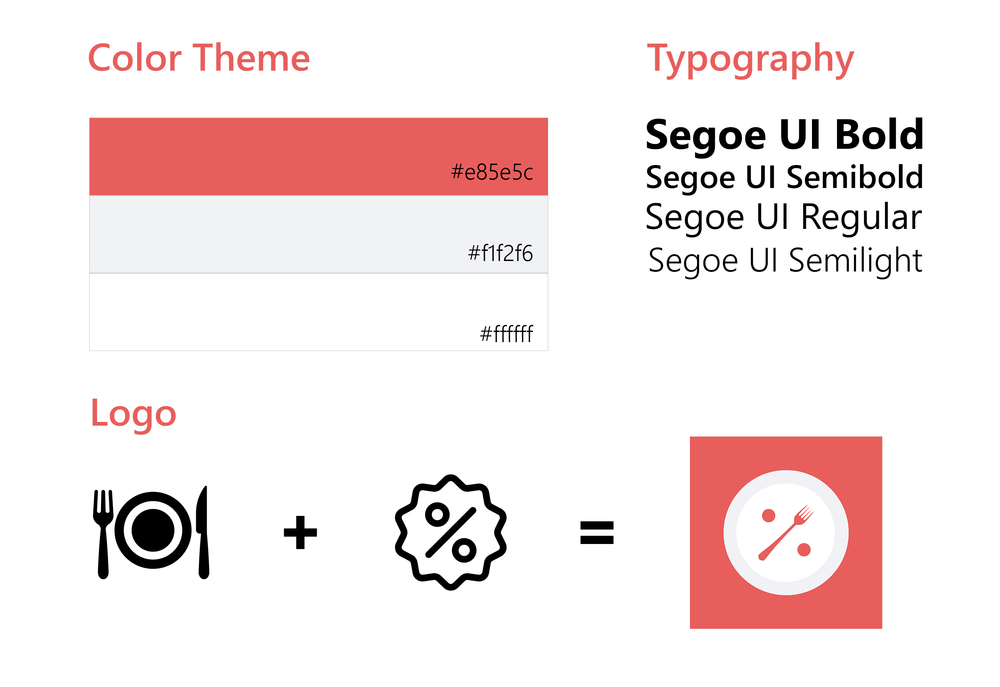
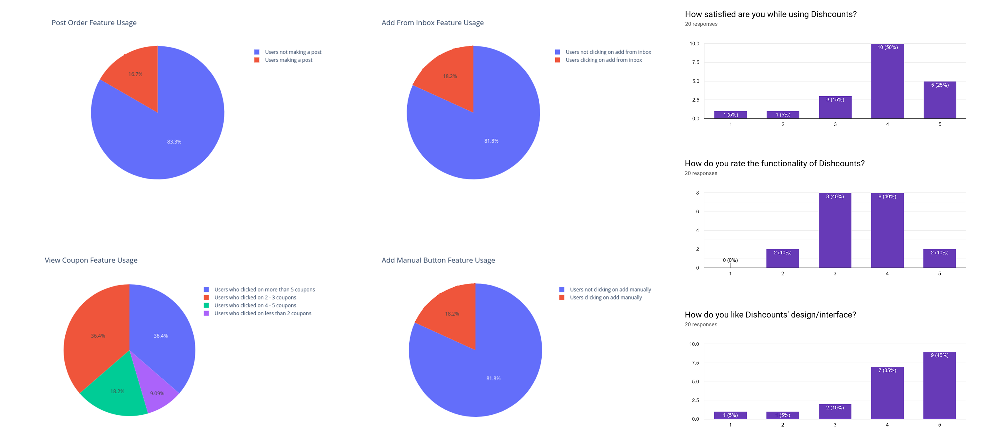

UI/UX, Mobile App
Sep - Nov 2019
5
Photoshop, Adobe XD, Lookback, Android Studio
Introduction
A common sight nowadays is a line of delivery boys near the hostels at dinnertime. However, this was not always the case. Before the summer of 2018, the frequency at which a hosteller ordered food was quite low compared to what it is today. Food used to only be ordered on a specific day of the week when the mess menu was particularly appetizing. All of this changed when Uber Eats launched in Delhi. At launch, they introduced discounts which were even greater than 50% off. Gourmet dishes which were never even considered affordable by the average student were being sold at rates comparable to canteen food. Many people started ordering every day trying to make the most of these offers. Rival companies like Zomato and Swiggy followed suit changing the meal habits of students.
The Problem
Ordering food has become very common nowadays with every app offering a different set of discounts. The coupons are sent to the users through different channels such as SMS, email, in-app etc. Some coupons have very short expiry dates and new coupons one coming up every day. To compare discounts users have to keep switching between apps and have no way to know which coupon provides the best value for a given day. The process to find the best deal has become very complex and time-consuming.
The Solution
Dishcounts is a coupon aggregator app which brings all coupons available to a given user in one place. Users will be able to compare, sort and search through the coupons they have. Dishcounts focuses on the details the users want to know about a coupon and not just what the delivery companies want the user to see. In addition, there is also the functionality to discover new coupons through sharing between friends.
User Research

Contextual Inquiry in Progress
To understand the motivations, attitudes and habits of students ordering food, we conducted contextual inquiries with 10 hostellers. We met the users during mealtimes and sat with them as they ordered their food. The interviews focused on how they get coupons, compare prices, what problems they face while applying coupons and practices for sharing coupons.
Observations
Affinity Diagram
To gather insights on our findings, we created an affinity diagram for data organization. We wrote each meaningful/possibly meaningful interview finding and quote on a sticky note and tried grouping similar notes together into categories. We used the online tool Miro for creating the diagram.

Lo-Fidelity Prototyping
Based on the findings of our user study we created 3 iterations of low-fidelity prototypes. After each iteration, we conducted user testing using LookBack.io and incorporated our user's suggestions in the next iteration.

User Testing Feedback

A user study in progress on Lookback
Hi-Fidelity Prototyping
After 3 iterations of user testing on the low-Fidelity prototype, we created a hi-fidelity prototype and did one more iteration of user testing on it.

Style Guide

The color scheme we use is red and white. Red has a psychological tendency to evoke feelings of stimulation and hunger. We did not use cold colors such as blue or purple anywhere as they are not found in naturally occurring food items and actually have the opposite effect to the colour red. While our goal isn’t to make people hungry, we use this familiarity of associating red with food as our app is also based on getting food.
Beta Testing
Based on the prototype we implemented an actual app using Android Studio, Firebase and some Regular expressions. We did a round of beta testing on this app and tracked user engagement through analytics and feedback forms.
